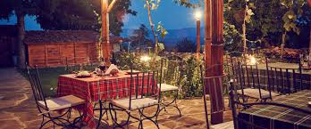
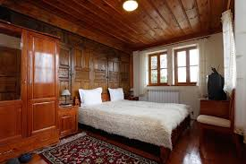
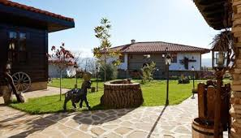

Yovina House – Жеравна




Featured
Yovina House
Област Сливен
Yovina House е популярна къща за гости, която съчетава традиционен възрожденски стил с комфорт. Стаите са обзаведени с дървени мебели, а дворът предлага уютна обстановка за почивка. Често е предпочитана от туристи заради автентичната атмосфера.
Activities
- Guided village tours in Zheravna
- Bird watching in the surrounding nature
- Visiting historical sites and museums
- Traditional craft workshops
Amenities
- Solar-powered electricity
- Rainwater harvesting
- Compostable toilets
- Eco-friendly toiletries
Book Your Stay
You wont be charged now, we will contact you about the reservation
🏡 Къща за гости „Йовина къща“ – Жеравна
📍 Местоположение и координати
📌 Село: Жеравна (Стара планина)
📍 Координати: 42.83419, 26.46149
🧭 Намира се в централната част на селото, близо до основните туристически обекти
🌄 Атракции наблизо
Жеравна е супер яко място за разходки и история. Ето какво има около къщата:
- 🏛️ Архитектурен резерват Жеравна – цялото село е като музей
- 🏠 Къща музей „Йордан Йовков“
- 🎨 Възрожденски къщи и малки галерии
- 🌲 Стара планина – идеална за разходки и гледки
- 🍖 Традиционни механи с българска кухня
🥾 Походи и маршрути
Ако ти се разхожда (което си струва 👀):
📏 Дължина: около 5 – 10 км
⏱️ Време: 2 – 4 часа
📍 Маршрут: Жеравна → околните пътеки в Стара планина
📊 Трудност на преходите
- 🟢 Лесно – разходки из селото
- 🟡 Средно – кратки планински маршрути
- 🔴 По-трудно – по-дълги преходи в Балкана
👉 Като цяло: подходящо за начинаещи и нормални туристи, не е нещо екстремно
📍 Карта
Location
Coordinates: 42.83419, 26.46149
📌 Координати
Географска ширина: 42.83419
Географска дължина: 26.46149
🌄 Атракции наблизо
- 🏛️ Архитектурен резерват Жеравна
- 🏠 Къща музей Йордан Йovkov
- 🎨 Художествени галерии и възрожденски къщи
- 🌲 Стара планина – пътеки и гледки
- 🍖 Традиционни механи
🥾 Походи и маршрути
Маршрут: Жеравна → природни пътеки в Стара планина
Дължина: около 5–10 км (в зависимост от маршрута)
Време: 2 – 4 часа
Трудност: Лесна до средна
📊 Оценка на трудност
- 🟢 Лесно – разходки в селото
- 🟡 Средно – планински пътеки
- 🔴 Трудно – по-дълги преходи в Балкана